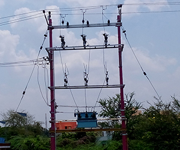

Home
About Us
Areas of Operations
Projects Portfolio
Gallery
CSR
Contact Us
Careers
33-132 kV Switchyard Extension at Dalot , Rajastan
33 kV Internal and External Lines at Dalot, Rajastan
33 kV Tranformer DP yard 18 nos at Dalot & Devgarh , Rajastan
33-220 kV Switchyard & 220 kV Bay Extension near Tadipatri, AndraPradesh
33 kV VCB Yard, 33 kV Metering Yard,33 kV Transformer DP Yard, 33kV SCOH at Bijapur District, Karnataka
33-132 kV Pooling SS in Sitamau, Madhya Pradesh
132-33 kV Pooling Substation including at Chandgarh in Madhya Pradesh
33-220 kV Pooling Sub-station in Nippania, Madhya Pradesh
132-33 kV Substation at Fatanpur, Dewas district, Madhya Pradesh
230 kV Bay Extension including associated civil works at Pugalur, Tamilnadu
230 kV SC line on DC towers at Anaikadavu in Tiruppur District, Tamilnadu
220-33 kV Substation at Beluguppa, Andhra Pradesh
220-33 kV Pooling Substation at Harappanahalli, Karnataka
220-33 kV Pooling Substation at Aspiri, Kurnool Dist., Andhra Pradesh
220 kV DC line on DC tower at Bableshwar Village, Vijaypura District
220-33 kV Pooling Substation in Sadla, Gujarat
220 kV line at Bijapur , Karnataka

c3-Distribution Strengthening works in Dindivanam & Kallakurichi
c6-110-11 kV Substation & 110kV SC tap line on DC towers at Dubalgundi
web 6 photos


{kind=link}
{kind=link}
{kind=link}
{kind=link}
{kind=link}
{kind=link}
{kind=link}
{kind=link}
{kind=link}
{kind=link}
{kind=link}
{kind=link}
{kind=link}
{kind=link}
{kind=link}
{kind=link}
{kind=link}
{kind=link}